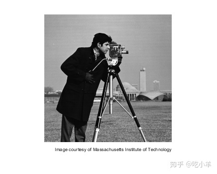
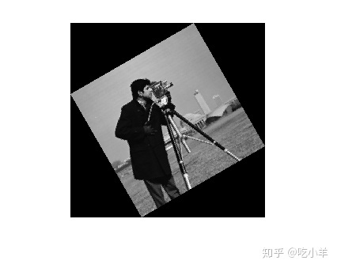
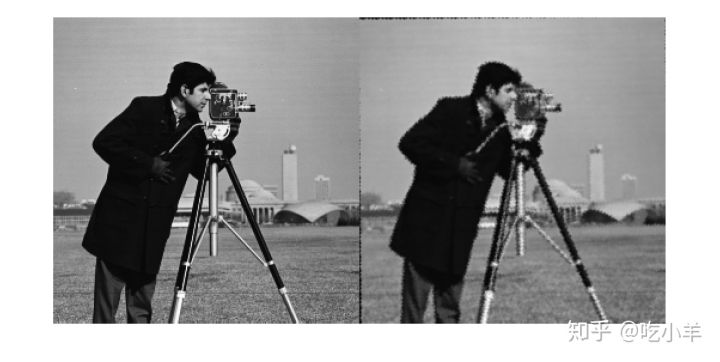

Home
本示例说明如何对齐或配准因旋转和缩放比例变化而不同的两个图像。您可以使用fitgeotrans在手动选择相应的点后找到旋转角度和比例因子。然后，您可以变形图像以恢复原始图像。
步骤1：读取图片
将图像读入工作区。
original = imread('cameraman.tif');
imshow(original)
text(size(original,2),size(original,1)+15, ...
'Image courtesy of Massachusetts Institute of Technology', ...
'FontSize',7,'HorizontalAlignment','right')

步骤2：调整图像大小并旋转图像
scale = 0.7; distorted = imresize(original,scale); % Try varying the scale factor. theta = 30; distorted = imrotate(distorted,theta); % Try varying the angle, theta. imshow(distorted)

步骤3：选择控制点
使用控制点选择工具来选择至少两对控制点。
movingPoints = [151.52 164.79; 131.40 79.04]; fixedPoints = [135.26 200.15; 170.30 79.30];
您可以使用这些预先选择的点来运行示例的其余部分，但是尝试选择自己的点以查看结果如何变化。
cpselect(distorted,original,movingPoints,fixedPoints);
通过选择“文件”菜单，然后选择“将点保存到工作区”来保存控制点。保存点，覆盖变量movingPoints和fixedPoints。
步骤4：估算转换
使非反射相似性转换拟合您的控制点。
tform = fitgeotrans(movingPoints,fixedPoints,'nonreflectivesimilarity');
完成第5步和第6步后，重复第4步至第6步，但尝试使用“affine”而不是“ NonreflectiveSimilarity”。怎么样？结果是否与“非反射相似性”一样好？
步骤5：解决比例和角度
几何变换tform在tform.T中包含一个变换矩阵。由于您知道转换仅包括旋转和缩放，因此数学运算相对简单即可恢复缩放和角度。
sc=scale*cos(theta)
ss = scale*sin(theta)
然后Tinv = invert(tform)，和Tinv.T =[sc -ss 0 ; ss sc 0 ; tx ty 1]
其中tx和ty分别是x和y的平移。
tformInv = invert(tform); Tinv = tformInv.T; ss = Tinv(2,1); sc = Tinv(1,1); scale_recovered = sqrt(ss*ss + sc*sc) scale_recovered = 0.7000 theta_recovered = atan2(ss,sc)*180/pi theta_recovered = 29.3741
scale_recovered和theta_recovered的恢复值应该匹配你在第2步：调整大小和旋转图像设置的值。
步骤6：恢复原始图像
通过变换旋转缩放后的图像distorted来恢复原始图像。这基于：使用几何变换tform，以及您对的original的空间参考了解的知识。“ OutputView”名称/值对用于指定重新采样的输出图像的分辨率和网格大小。
Roriginal = imref2d(size(original)); recovered = imwarp(distorted,tform,'OutputView',Roriginal);
比较recovered来original看着他们并排蒙太奇显示。
montage({original,recovered})

由于恢复过程的失真，recovered（右）图像质量与original（左）图像不匹配。特别是，图像缩小会导致信息丢失。边缘周围的伪影归因于变换的精度有限。如果要在“步骤3：选择控制点”中选择更多点，则转换将更加准确。
======================================================================
我的测试结果及程序
下面是我测试的代码：

注：本文根据MATLAB官网内容修改而成。